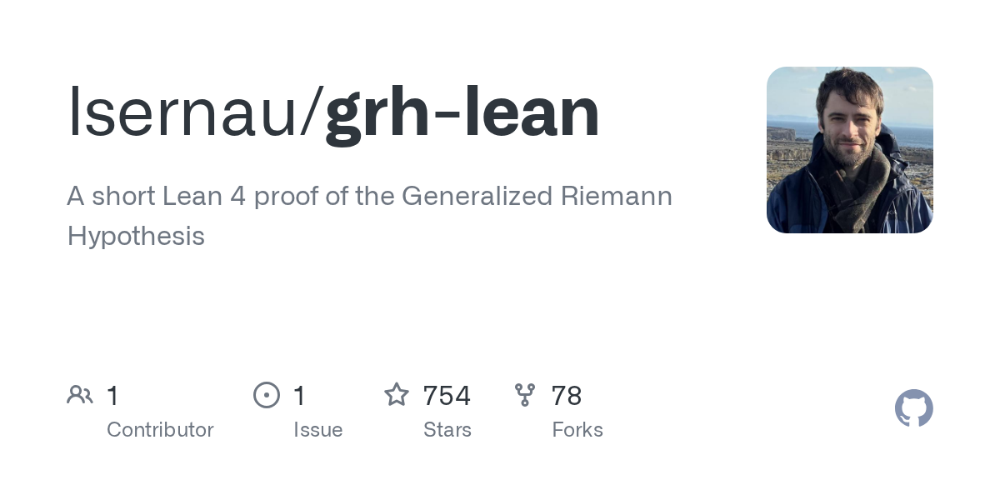

AI Desk · Complexity · Follow-Up · Most-Discussed
The proofs post has tripled on the wire — 1,718 points — and the talk has moved from the results to their consequences: who reads them, what breaks, and whether to still apply to graduate school
Scott Aaronson’s Wednesday account of OpenAI’s and Anthropic’s proofs — VP ≠ VNP, ω = 9/4, a Fourier-transform lower bound at N(log N)1/2+o(1) — adds 1,135 points since the afternoon paper; the blog’s own comment thread now reports the newest papers readable and the Riemann proof reconstructed within a week

AUSTIN, TEXAS — “HOLY SHIT HOLY SHIT HOLY SHIT HOLY SHIT,” posted to Shtetl-Optimized on Wednesday at 1:01 pm, stood at 583 points when the afternoon Herald went to press; this morning it opens at 1,718 — up 1,135, nearly triple, with 1,554 comments, the day’s most-discussed story. The post’s ledger of the week is unchanged: OpenAI’s proof that ω, the exponent of matrix multiplication, is exactly 9/4 — a lower bound, matching the upper bound of the Oct. 6 “Mathocalypse” drop, and settling a question open since Strassen in 1969 — plus a same-night release putting the linear gates for the Fourier transform at N(log N)1/2+o(1), improving the O(N log N) fast Fourier transform that had stood since the 1960s, with a matching lower bound.[1]
What has grown alongside the score is the argument. Aaronson reiterates both certainties: that he is “virtually certain, from multiple reliable sources, that the AI labs are now sitting on one or more bombshells” in cryptography — while refusing to vouch for any specific version, since “exact statements of what was done may have been mangled in a game of Telephone” — and that his “working assumption by this point is that any proof that comes directly from OpenAI or Anthropic is correct barring information to the contrary,” the labs having “repeatedly shown that they can back up their claims with Lean certificates.” He now feels “in my bones, for the first time ever, that a proof of P ≠ NP is not far,” and passes along a friend’s line on the reversal of the crackpot trade: after years of crackpot “solutions” claiming Millennium Problems are solved, “now that we have actual solutions, we have crackpot ‘refutations’ claiming Millennium Problems are not solved.”[1]
The post’s own comment section is where the reading has moved. “MD” reports that “the most recent wave of papers is becoming actually readable, as opposed to the messy AI slop of the previous waves”; Ernest Davis counts three expositions of the general structure of the Alpöge Riemann proof already posted, two on GitHub, within the week — “the proofs don’t seem to be beyond human ken, validated by Lean but utterly mysterious, as some of the early reactions breathlessly claimed.” One graduate-school applicant asks Aaronson point-blank whether to still apply in theoretical computer science: “I know it’s going to be different, but maybe that’s okay? … It’s exciting but frankly a bit dreadful.” The HN thread, for its part, litigated the cryptography rumor’s politics — whether a lab breakthrough would be “forcibly classified by the organs of state security” as with differential cryptanalysis in the ’70s, answered by a reader noting it is “a pretty different world” and that Aaronson is “far from being a random blogger.”[1][2]
Security Desk · Follow-Up
The 1Password disclosure keeps climbing — 1,523 points — and the thread has found its question: how did one employee’s GitHub account push malicious code to production?

TORONTO — The Nov. 25 incident report — an attacker in an employee’s corporate GitHub account on Nov. 19, malicious code pushed to backend services, customer names, email addresses and account metadata downloaded, vault contents and their keys untouched, emailed recovery codes lengthened from six digits to ten characters — returned overnight at 1,523 points, up 678 since the afternoon edition’s 845, with 655 comments. What changed in the thread is the focus: from what was taken to how it was reached.[3][4]
The sharpest line was posted within the hour: “Interesting that their is no code review in place and the attacker could just deploy something,” one reader wrote — answered from below by a second noting that an administrator account “can just bypass all code review settings (the button just turns red in Github, still clickable),” and a third that “even admin bypass can be disabled,” with a fourth arguing GitHub’s permissions are “more akin to a social network than an enterprise tool” for identity and access control. The architecture held up better than the deployment path: one reader who works in security put the design plainly — “you were never going to be one SQL query away from vault plaintext at 1Password” — while another flagged how much is still unknown: how far the attacker got through the systems, and what was extracted before detection, “is very concerning. Feels like a bullet was dodged.”[4]
AI Desk · Mathematics
A 76,000-line Lean compression of the Riemann proof — “passed machine checks only. No mathematician has read it through, and no paper comes with it”

A personal repository by Luke Sernau — “produced in collaboration with my colleagues at Anthropic, and Claude” — offers a Lean 4 proof of the Riemann Hypothesis and its generalization to Dirichlet L-functions, built on Mathlib with only the axioms propext, Classical.choice and Quot.sound, based on Levent Alpöge’s proof with Claude. Two editions ship: grh/, a readable 300,000 lines, and grh-compact/, the same five theorems at about 76,000 lines. The status line is unusually blunt: the proof “has passed machine checks only… No mathematician has read it through, and no paper comes with it.” A build takes one to two hours on 12 cores with 24 GB of memory.[5][6]
The thread did the arithmetic and the forensics. From the original proof’s roughly 17 million lines, 76,000 is “a 99.56% reduction”; the community-driven compression — “a hundred contributors and thousands of pull requests” — sits at a mere 33%, and its dashboard has since switched to this repository’s version. On the attribution: “If this were ‘from Anthropic’ surely it would be hosted on an Anthropic account?” one reader asked — and another supplied the detail: Anthropic has not acknowledged the Riemann proof; Alpöge posted his original on his own website, “after asking Dario for permission.”[6]